Кем бы я был в 1980–1990-х?
Этот проект представляет философское размышление о связи между прошлым и настоящим в контексте профессий и технологий.
Концепция
В эпоху 1980–1990-х годов, когда персональные компьютеры только начали входить в повседневную жизнь, существовали профессии, которые по своей сути были предшественниками современного AI-архитектора и разработчика интеллектуальных систем.
Инженер АСУ (Автоматизированных Систем Управления) — человек, который проектировал системы, способные обрабатывать большие объёмы данных, принимать решения на основе алгоритмов и автоматизировать бизнес-процессы. Это был аналог современного специалиста по машинному обучению и AI.
Проектировщик информационных систем — создавал структуры баз данных, проектировал логику обработки информации, разрабатывал интерфейсы взаимодействия человека с машиной. Сегодня это напоминает работу архитектора AI-систем.
Аналитик систем — изучал потребности пользователей, формализовал бизнес-процессы, создавал модели данных. Это прообраз современного AI-консультанта и специалиста по промпт-инжинирингу.
Роль ИИ сегодня
Сегодня искусственный интеллект не заменяет эти профессии, а является их логическим развитием. Современный AI-архитектор объединяет в себе все эти роли:
- Проектирование интеллектуальных систем (как инженер АСУ)
- Создание архитектуры данных и алгоритмов (как проектировщик)
- Анализ потребностей и формализация задач (как аналитик)
- Разработка интерфейсов взаимодействия (как дизайнер систем)
Образ новой профессии
Современный разработчик AI-решений — это синтез инженера, психолога, аналитика и художника. Он не просто пишет код, а создаёт инструменты, которые помогают людям понять себя, автоматизировать рутину, анализировать сложные данные и принимать решения.
 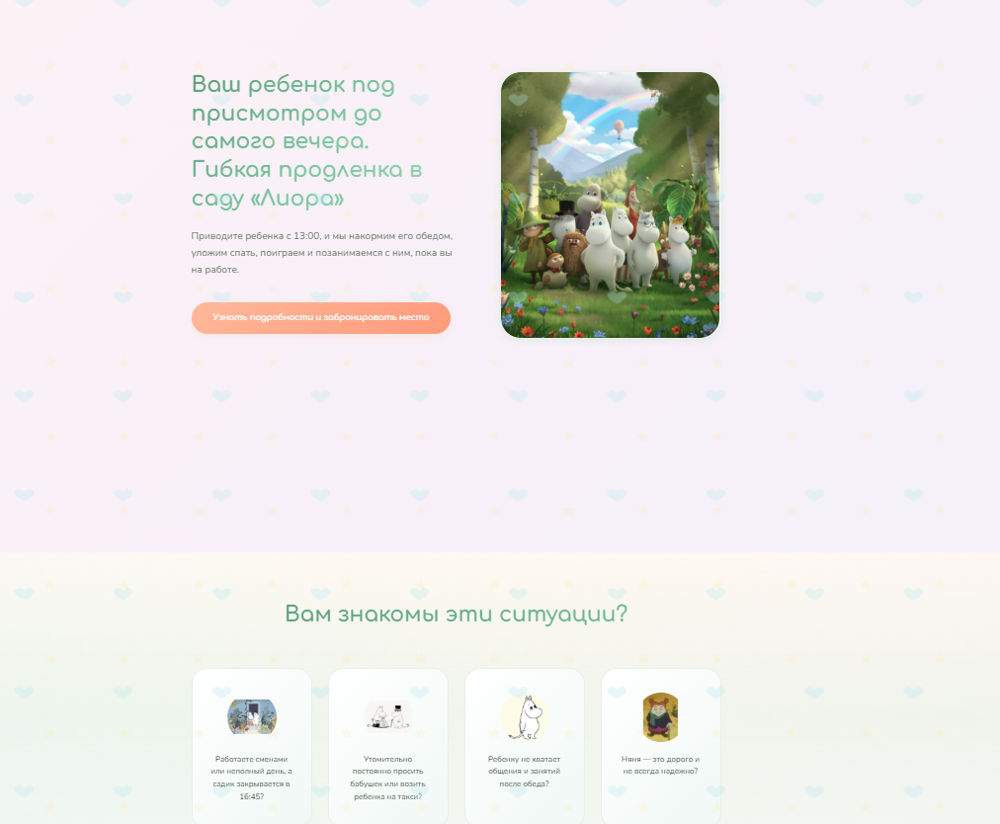
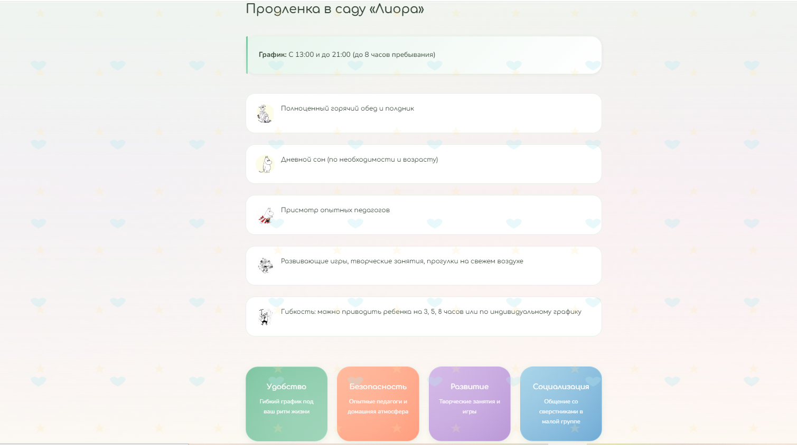
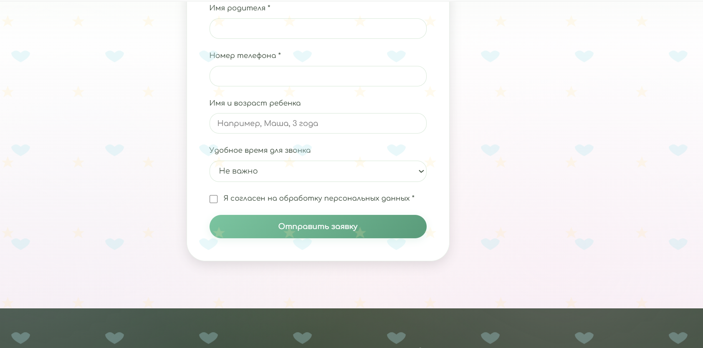
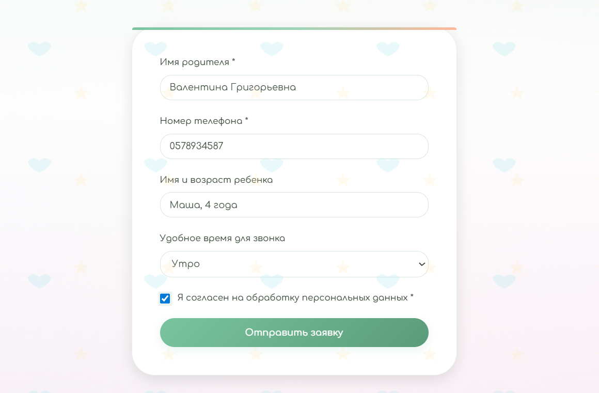
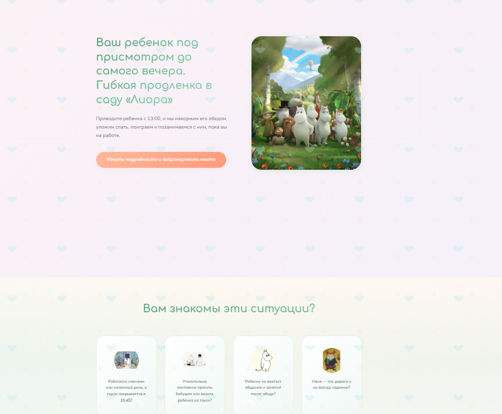
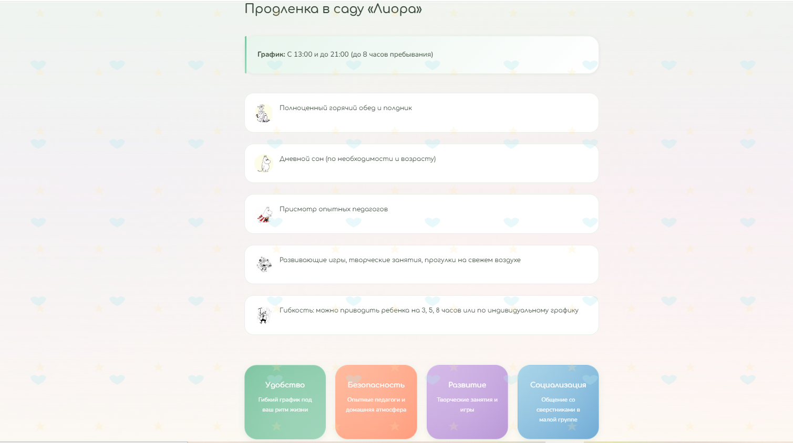
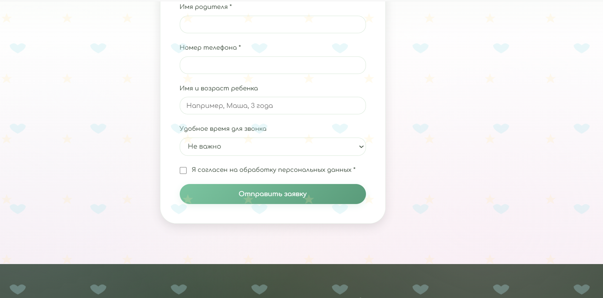
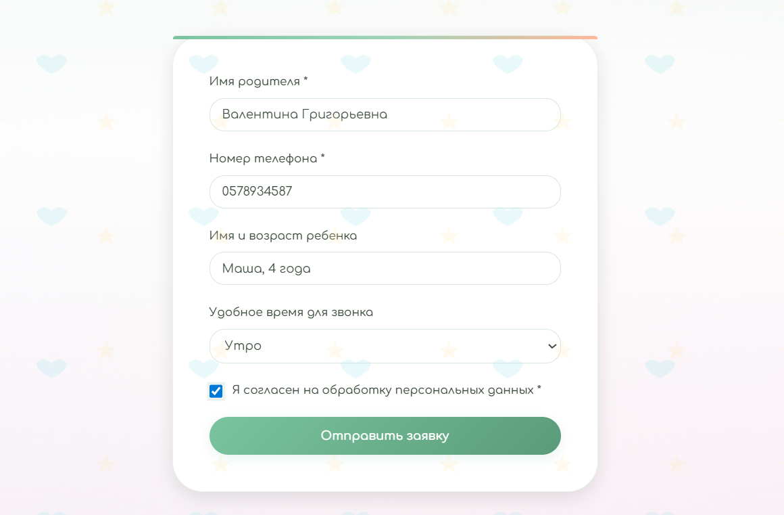
 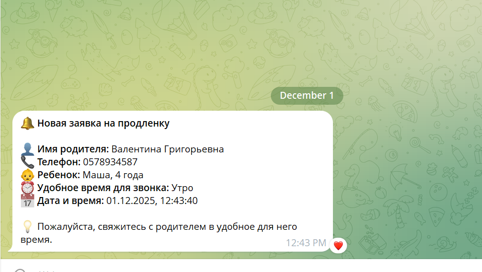
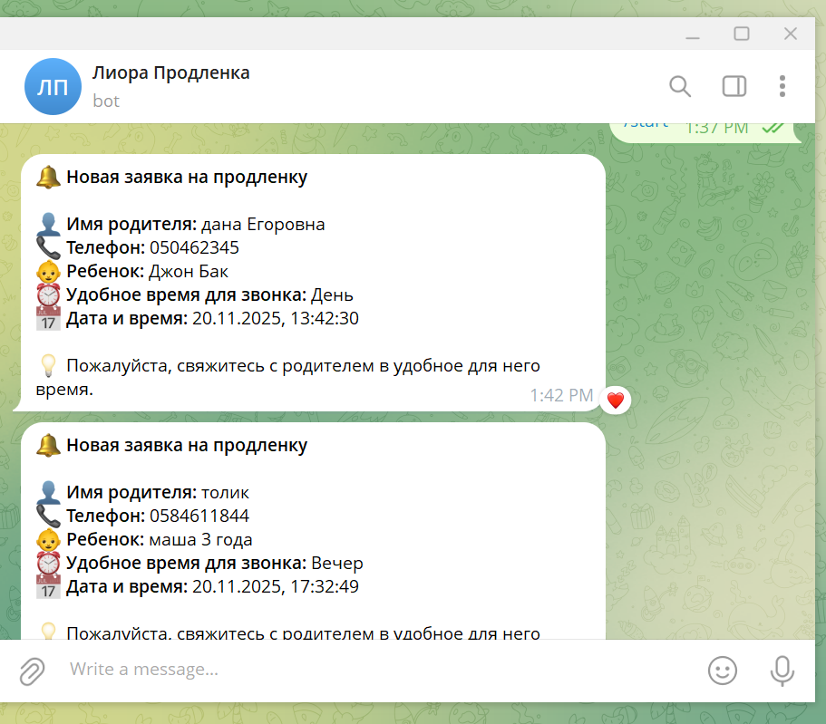
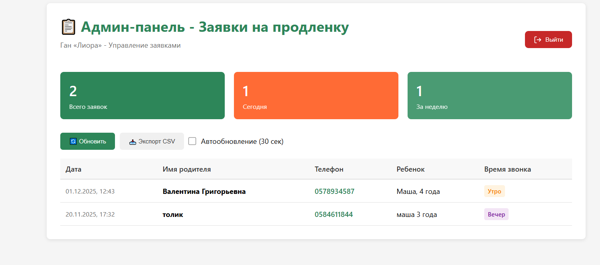
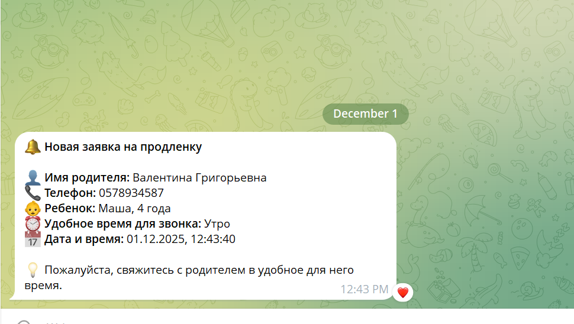
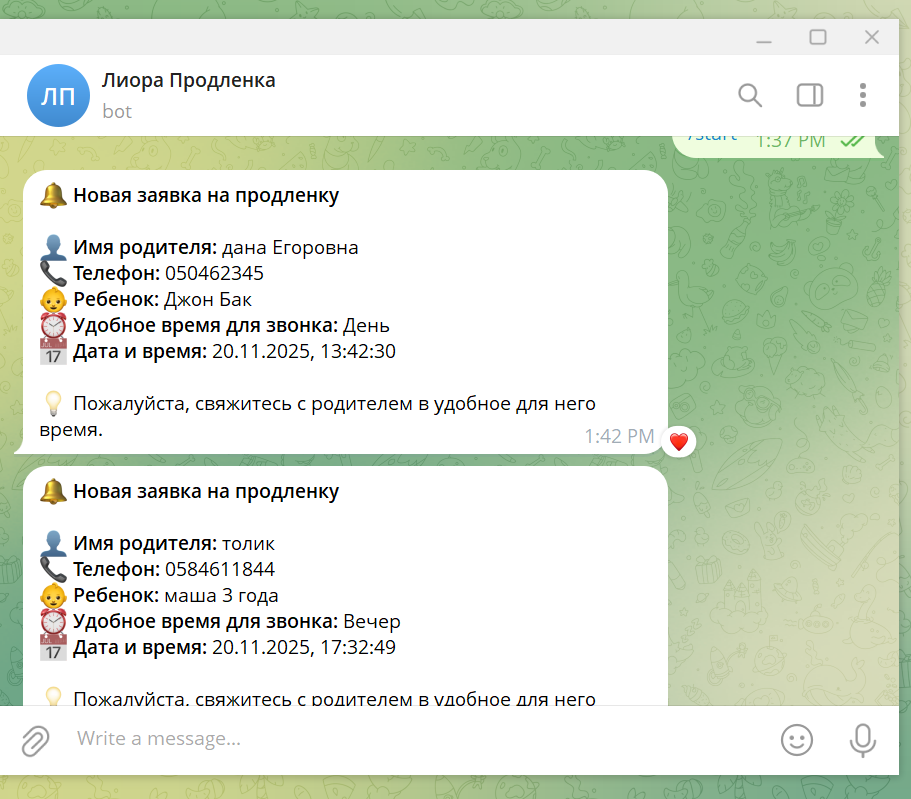
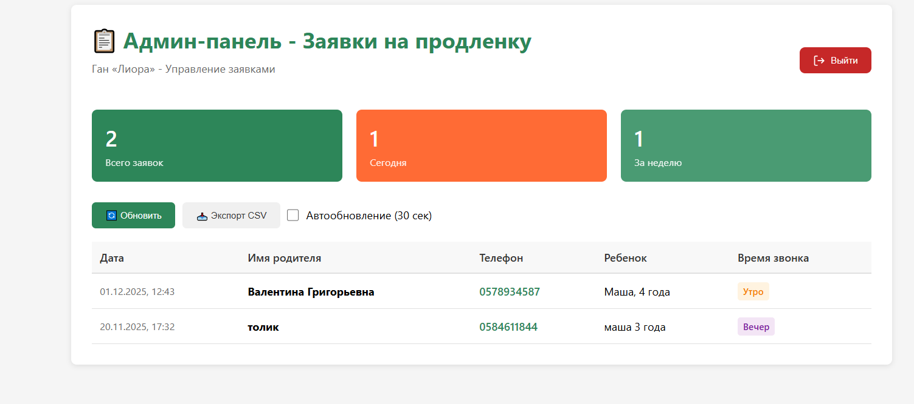